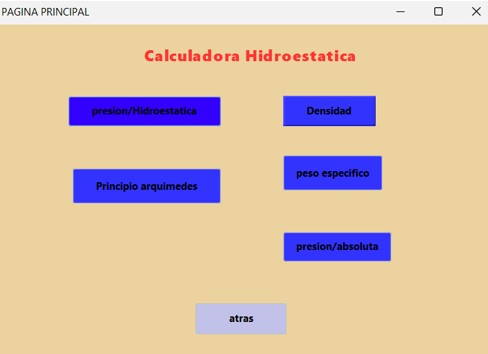

Implementación de la Pantalla de Login en la Calculadora
Introducción
El método validar() verifica credenciales y redirige al usuario a la pantalla principal, que incluye fórmulas clave de hidroestática para facilitar su uso y comprensión.
Hemos creado nuestra clase FROMLOGIN:
Para el implementó de un método validar() para verificar las credenciales del usuario. Si son correctas, accede a la calculadora; si no, se muestra un error. Al presionar "Ingresar", se ejecuta el método ingresarBtnActionPerformed() que valida las credenciales.
Al iniciar sesión, el usuario llega a la pantalla principal de "From Hidro", donde se muestra una imagen con fórmulas de hidroestática, mejorando la experiencia y facilitando el uso educativo de la aplicación.
PANTALLA DE FORMULAS :
Al hacer clic en "Formulas", se abre una ventana llamada "From Formulas", que contiene fórmulas clave sobre hidroestática y mecánica de fluidos, como las relacionadas con densidad, presión, ley de Pascal y principio de Arquímedes. Estas fórmulas son esenciales para entender el comportamiento de los fluidos en ingeniería y física.
NUESTRA PAGINA PRINCIPAR DE LA CALCULADORA:
UNA VEZ AQUÍ el código Java correspondiente ejecuta un
método específico que dirige al usuario a la ventana adecuada para realizar la operación seleccionada

EL USO DE METODOS PARA LA VISUALIZACION DE NUESTRAS FORMULAS:
1.METODO btndensidadActionPerformed():
2. Método presionHidroActionPerformed():
3. Método btnarquiActionPerformed():
RESULTADO:
EL USO DE METODOS PARA LA ASIGNACION DE NUESTRAS FORMULAS:
1. Método convertirAltura:
El método convertirAltura convierte valores de altura de diferentes unidades (cm, mm, km, pies e pulgadas) a metros, que es la unidad estándar utilizada para los cálculos de presión hidrostática.
2. Método convertirDensidad: El método convertirDensidad convierte valores de densidad de diferentes unidades (mg/mL, g/L, kg/m³) a kg/m³, que es la unidad estándar para cálculos de densidad en el Sistema Internacional de Unidades (SI).

RESULTADO FINAL:
CONCLUSIÓN:
El desarrollo de la calculadora hidrostática en Java ha culminado en una herramienta eficaz y sólida para el análisis de fluidos. Durante el proyecto, hemos añadido diversas funcionalidades que mejoran significativamente la usabilidad y aseguran la precisión en los cálculos. Esta calculadora no solo cumple con las expectativas iniciales, sino que también establece una base firme para futuras actualizaciones y expansiones. La combinación de una interfaz fácil de usar, métodos de conversión precisos y cálculos confiables garantiza que esta herramienta será extremadamente útil tanto en entornos educativos como profesionales.